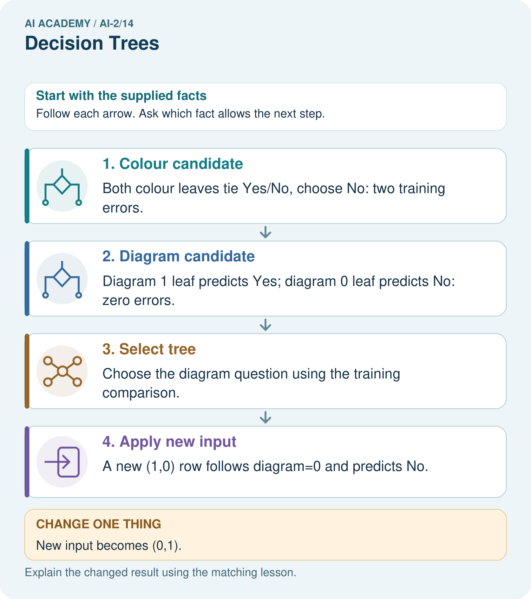

AI Academy · Level 2 · Grade 7 · Week 14 · Teacher guide
Decision Trees
Learn to understand, design, build, test and explain AI systems responsibly.
Project: Transparent Book Recommender
Teacher guide · 1 of 8
Decision Trees
Teach the learning cycle
Primary target: Fit a root question and leaf predictions from training examples
| Session | Sequence and minutes | Resources |
|---|---|---|
| Session 1 · Understand · 45 min | 0–7: recall and prerequisite; 7–15: inspect the concrete case and predict; 15–30: teacher models the worked trace; 30–40: learners explain a step using the text and visual; 40–45: check the core idea. | Sections 1–6; record the brief recall in the workbook. |
| Session 2 · Practise · 45 min | 0–5: retrieve the procedure; 5–15: W2 completion practice; 15–23: explain and check with a partner; 23–30: each learner answers the misconception check; 30–40: targeted reteaching or a harder variation; 40–45: prepare the investigation. | Sections 7–10; use the matching workbook W2 and misconception check. |
| Session 3 · Investigate and transfer · 45 min | 0–5: retrieve the decision rule; 5–20: investigate or trace; 20–30: start the independent case; 30–38: connect the project; 38–43: act on feedback; 43–45: plan the return check. | Sections 9 and 11–14. Give extra time to finish the full task set; use Section 15 when the week includes a coding lab. |
This is a starting allocation of 135 minutes, not a validated duration. Preserve all named topics. Schedule extra time for connected examples, the full investigation, independent cases and project building. Repeated copies of a case share one recorded attempt; they are not new evidence.
Case exposure check: this source example appears in ai-2/14, ai-2/15, ai-4/11. Reuse a familiar case for recall or modelling; verify that the case used to assess transfer has not already received feedback.
Retrieval answer guidance
Types of Classification Error
Without opening the old lesson, explain one key idea from Types of Classification Error. Give an example and a mistake that the idea helps you avoid.
Look for: Build a labelled confusion matrix from matched reference and prediction pairs
Reference example, not the only acceptable wording: Reference clear/predicted clear contains V1,V2: 2. Clear/blocked contains V3: 1. Blocked/clear contains V4,V5: 2. Blocked/blocked contains V6,V7,V8: 3. Matrix [[2,1],[2,3]].
Training and Testing
Without opening the old lesson, explain one key idea from Training and Testing. Give an example and a mistake that the idea helps you avoid.
Look for: Choose a split unit that matches the intended prediction claim
Reference example, not the only acceptable wording: Training fits the model; validation compares development choices; test evaluates after choices are fixed. Repeatedly selecting by the test score uses that set for development, so it is no longer an untouched final evaluation.
Operational Labels
Without opening the old lesson, explain one key idea from Operational Labels. Give an example and a mistake that the idea helps you avoid.
Look for: Apply a category definition using explicit evidence and boundary rules
Reference example, not the only acceptable wording: In order: ready because both known fields pass; revise because 31 exceeds 30; review because the known day passes but the room is unknown; revise because the known day failure has priority over the unknown room. Equality at 30 is accepted.
Use the student module and workbook section with this exact week title. The worked case, independent question and answers below form one aligned lesson sequence.
What the learner must demonstrate
Build a tree for science books: first ask science?; then, for yes, pages<=100? Trace science/100 and history/70. What should happen to science with missing pages?
Concept to explain
Each question partitions possibilities; question order affects efficiency.
| Term | Meaning |
|---|---|
| decision tree | A sequence of branching questions that routes an input to an output at a leaf. |
| node | A point in a graph or tree representing a state, question or result. |
| leaf | A final node of a decision tree that supplies an output rather than another question. |
| partition | One separated portion of a dataset, such as training, validation or test data. |
Prepare the class
Use the supplied scenario, student illustrations and blank paper. For numeric work, offer counters or a calculator after learners show the setup. Fictional records are supplied; personal data and paid accounts are unnecessary.
Allow 80 minutes: recall 8; explanation 12; worked demonstration 15; guided practice 20; independent assessment 15; project and reflection 10. Extend the lab into a second session when needed.
Preparation for the connected explanation
Teach two 45-minute sessions. Students fit a depth-one decision tree by learning branch majorities and selecting the question with the fewest total training mistakes. This transparent classroom algorithm is not a claim to reproduce CART or a library default. Explain tuple positions, list comprehension and the leaves dictionary; offer the full paper route for students who need it.
Readiness answer
The cutoff was selected using training labels. Matching those examples does not establish performance on new examples; validation can expose mistakes and support a baseline comparison.
Printed lesson and workbook
Six training row cards and four validation cards
Two branch areas labelled 0 and 1
Optional Python 3 editor with no packages required
End goal for the pictorial case
By the end, I can fit a one-question tree using training labels and an explicit candidate comparison.
This added worked case illustrates the week’s main idea. Retain all original and connected topics; schedule its practice within the teaching cycle.
Teacher guide · 2 of 8
Explain the mechanism
Explain the mechanism
Input → Process → Output
Trace the information. At each stage, ask what changed and how you could test it.
Which stage could fail even when the other two are correct? Explain:
Predict first. Then check each step. A correct answer without visible reasoning is incomplete evidence.
1. Start with 8 animals.
2. Question A leaves groups of 4 and 4; question B leaves 7 and 1.
3. A balanced first split usually reduces later questions.
4. Trace every animal to verify one and only one leaf.
Recalculate, retrace, or restate the reasoning in your own representation:
CHECK Did the evidence answer the exact question? Did the total, path, or source record stay consistent?
Concrete teaching case
First ask animal book? If no, Other. If yes, ask pages<100; yes gives Short Animal, no gives Longer Animal.
Trace 90-page animal and science books.
Exact explanation to model
The animal book reaches Short Animal; science reaches Other after the first question.
Explain the added worked example
A decision tree asks a feature question and follows a branch to a prediction. A tree with one question has depth one and is sometimes called a stump. Unlike Week 8, where the two output labels were fixed in advance, this week we fit both the question and the label stored at each leaf.
Our six fictional training rows have two binary sensor flags available before prediction: near and tall. A value of 1 means that flag is present; 0 means absent. The reviewed scene label is separate. Each row represents a different trip on a familiar route, including rows with identical values. Similar readings can have different scene labels. These are teaching examples, not robot control instructions.
Try near first and tall second. For each question, group the training rows by 0 and 1, then predict each group’s majority label; choose clear for tied label counts. Count all training mistakes and keep the first question if scores tie. Stop after one question. This is our stated classroom fitting procedure.
Feature 0 is near; feature 1 is tall; row[2] is the label. Output is 0 1, then 1 2, then 0 clear blocked. Near makes one training mistake: near=0 contains two clear labels and one blocked, so that leaf predicts clear. Near=1 contains three blocked labels. Tall makes two mistakes because both its groups have a blocked majority.
The stored tree contains the chosen feature and its two learned leaves. The code assumes nonempty data, binary flags, allowed labels and examples on both branches of each candidate. An empty branch would need a declared fallback; this small example does not implement one. The score is total training mistakes, not an average giving small and large branches equal weight.
This is an explicitly limited depth-one learner. General tree algorithms can repeat split selection within branches and often use impurity criteria such as Gini. Our code does not implement that full procedure. Keeping the scope small lets you inspect every decision.
Key terms
| Term | Meaning |
|---|---|
| Root | The first question asked by a tree |
| Branch | A path selected by the answer to a question |
| Leaf | An endpoint that stores a prediction |
| Depth | The largest number of question steps from root to leaf |
Model the reasoning aloud
Use the complete worked example below before asking learners to complete W2. Reveal a small part, invite a prediction, then explain the deciding step. These teacher notes contain solutions; do not reveal the independent case answer during modelling.
Two paths through the learned tree
Validation rows are (near=1,tall=1,blocked), (0,0,clear), (0,1,blocked), (1,0,clear). Follow only near: predictions are blocked, clear, clear, blocked. Two of four match. The training-majority baseline predicts blocked, since training has four blocked and two clear; it also matches two of four validation labels.
Keep the fitted root and leaves unchanged while scoring. Equal accuracy does not mean identical errors, and five correct training predictions out of six is not the validation result.
| Thinking move | Teacher prompt |
|---|---|
| Plan | What is given? What is the question? Which procedure fits these facts? |
| Do | Point to each input and intermediate step in the worked trace. Name the rule that allows the next step. |
| Check | Does the output answer the question? Which assumption or limitation prevents a larger claim? |
Use the diagram and verbal explanation together. Ask learners to match a sentence to a specific visual step; do not assign learners fixed visual or auditory learning styles.
A pictorial worked case: Decision Trees
A fictional toy classifier predicts whether a book needs an illustration label.
The facts we will use
Training rows (colour_cover,diagram_inside,label): (1,1,Yes),(1,0,No),(0,1,Yes),(0,0,No).
Candidates ask colour_cover or diagram_inside; each leaf uses its training majority. A leaf tie chooses No. Select fewer training errors.

Read the picture one step at a time
Why this result follows
A question becomes a fitted tree only after its leaves and selection procedure are specified. The training comparison prefers the feature that separates these labels. Prediction follows the selected question; it does not reselect the tree using a new case’s answer. Save candidate leaves and errors so the choice can be repeated.
What this example does not establish
Zero errors on four toy examples do not establish that diagrams always determine a real book’s classification.
Change one thing in the pictured case
Change: New input becomes (0,1).
Prediction: The fitted tree predicts Yes.
Reason: It follows diagram=1; cover colour is not the selected question.
Ask while showing the picture
Cover the result. Ask learners to name the inputs and predict the next step. Uncover one step, connect the icon to the actual procedure, and explain its evidence. Then change the supplied condition and compare. The picture is a representation; it does not document execution of a real AI model.
Teacher guide · 3 of 8
Demonstrate and guide practice
Demonstrate and guide practice
Board sequence
Write the given facts: First ask animal book? If no, Other. If yes, ask pages<100; yes gives Short Animal, no gives Longer Animal.
Write the question to explain: Trace 90-page animal and science books.
Reveal after predictions: The animal book reaches Short Animal; science reaches Other after the first question.
Keep for an independent attempt: A tree asks topic is space, then pages at most 60. A space book has 70 pages. Trace both answers and explain why you cannot stop at the first question.
Classroom dialogue
Ask: Which facts are given, and which would we have to assume? Learners mark relevant details before discussing answers.
Say: Predict first. Show the rule, information path or calculation that would produce the result. A correct guess is not yet an explanation.
Reveal reasoning one step at a time. Explain why a tempting alternative fails. Write units and denominators for arithmetic, trace conditions for decisions, and identify supporting sources for claims.
In pairs, one learner solves while the other checks evidence; exchange roles. Remove the worked answer before independent assessment.
Model these guided questions
Guided: tree predictions blocked,clear,clear,blocked miss rows 3 and 4. Baseline blocked misses rows 2 and 4. Both get 2/4 or 50 percent. Tall cannot affect prediction because the stored root uses near only. Exit: the near=1 leaf contains three blocked training examples, but the whole tree gets 2/4 on this tiny validation set and misses one near=1 validation case. This does not establish reliability on future trips.
Case-specific teaching sequence
| Stage | Teacher action |
|---|---|
| Session 1 start to 7 minutes | Retrieve training search versus validation. Introduce root, branch, leaf and depth with one question. |
| 7 to 18 minutes | Sort the six cards by near. Count labels within each branch and assign its majority without using validation. |
| 18 to 32 minutes | Repeat for tall and complete W1 and W2. Add branch mistakes to score the full training set. |
| 32 to 45 minutes | Trace code and the diagram. Predict all four validation rows, complete the guided question and compare the baseline. |
| Session 2 start to 8 minutes | Retrieve why a leaf label is learned rather than dictated by the feature name. |
| 8 to 20 minutes | Complete W3 and discuss depth limits, tied questions and the assumptions required by the short code. |
| 20 to 35 minutes | Collect W4 independently before hints. Require branch counts, both candidate scores, learned leaves and validation comparison. |
| 35 to 45 minutes | Use W5 and the exit claim. Give the fresh retry after feedback and record support. |
Reduce help deliberately
Completion task: For each near branch and each tall branch, count blocked and clear labels and choose a leaf. Give the total errors for each candidate question.
Teacher check: Near=0 has 1 blocked and 2 clear, predicts clear with 1 error; near=1 has 3 blocked and 0 clear, predicts blocked with 0 errors. Tall=0 has 2 blocked and 1 clear; tall=1 also has 2 blocked and 1 clear. Both tall leaves predict blocked with 1 error each. Totals are near 1 and tall 2.
Start by identifying the given inputs together. Leave the intermediate steps blank. If needed, model one step, then withdraw that help on the next step. Move to a full trace only when the partial trace is understood. For partners, alternate explainer and checker; collect a response from every learner before discussion.
Individual reasoning check
Use the worked case for Fitting a decision tree. Proposed explanation: “A near branch must predict blocked”. Decide whether this explanation is supported. Point to the step or supplied fact that decides; explain your repair if needed.
Expected correction: The branch label is learned from its training labels; W4 deliberately reverses that relationship.
Collect explanations, not only yes/no votes. If a misunderstanding is common, re-model the relevant step for the class. If it affects a few learners, give a short targeted group explanation while others solve a more demanding variation.
Pictorial practice question
Why does changing colour alone not change this tree’s prediction?
Reasoned teacher answer
The fitted tree branches only on diagram_inside; colour was considered but not selected.
Changed-case reasoning: The fitted tree predicts Yes. It follows diagram=1; cover colour is not the selected question.
Collect each learner’s explanation before discussion. Use the first missing connection between input, deciding step and result to choose support. This question is worked-case practice, not fresh mastery evidence.
Teacher guide · 4 of 8
Run the weekly evidence lab
Run the weekly evidence lab
Words You Can Use to Reason
A definition matters when you can recognize the idea, use it, and contrast it with a near-miss.
Predict → Test → Record → Explain
Keep expected and actual results separate. Surprises are useful data when recorded honestly.
Choose yes/no questions, build a tree for eight cards, count questions per card, and exchange trees for an unseen trace test.
What did the hardest test teach you that the normal test did not?
Make the lab runnable
Use the concrete case as the shared normal case and the independent question as a second case. Each pair creates a boundary or missing-information case and predicts its result before testing. Keep the expected result separate from an observed mistake.
| Record | What to capture |
|---|---|
| Input or evidence | Exact data, instruction or claim |
| Expected result | Answer or safe fallback declared before the run |
| Observed result | Actual result, including errors |
| Explanation | Rule, calculation or evidence explaining the outcome |
| Next test | One justified change and a new prediction |
Diagnose and reteach
For guessing, return to given facts and request a trace. For vocabulary without application, use one example and one non-example. For arithmetic errors, check the setup before the calculation. Finish with a different uncoached case before recording mastery.
Address these additional misconceptions
A near branch must predict blocked: The branch label is learned from its training labels; W4 deliberately reverses that relationship.
Every feature is used during prediction: Only questions in the stored tree are followed. Candidate questions rejected during fitting do not affect this tree’s output.
A deeper tree must work better: More questions can fit training detail. Future performance needs separate evaluation; depth choices must be documented.
Match the support to the first error
| What the response shows | Next teaching action |
|---|---|
| Missing or misread facts | Read the case aloud, mark supplied versus unknown facts, and let the learner restate it. |
| Wrong procedure | Return to the deciding step in the worked case. Contrast it with the proposed incorrect explanation. |
| Arithmetic or implementation error | Trace intermediate values or lines; preserve the first mismatch and retry that step. |
| Correct result without a reason | Ask for a trace and a changed case before marking independent understanding. |
| An unsupported wider claim | Ask which supplied evidence supports the claim and which further observation would be needed. |
Offer an oral explanation, drawing, enlarged visual or fewer examples when that removes a reading/writing barrier. Keep the same reasoning goal. Stretch secure learners by changing a boundary or assumption and asking them to defend the effect, not simply by assigning more of the same questions.
Teacher guide · 5 of 8
Assess and explain the answers
Assess and explain the answers
Worked case answer
The animal book reaches Short Animal; science reaches Other after the first question.
Independent question
A tree asks topic is space, then pages at most 60. A space book has 70 pages. Trace both answers and explain why you cannot stop at the first question.
Expected independent answer
First answer yes, second answer no. Follow the leaf on that complete path. The first branch alone does not determine the final decision.
What counts as evidence
| Criterion | 0 points | 1 point | 2 points |
|---|---|---|---|
| Result | Incorrect or absent | Partly correct | Correct with necessary conditions |
| Reasoning | No supporting trace | Some steps | Clear mechanism, calculation or source support |
| Limit | Overclaims certainty | Vague limitation | Relevant uncertainty or missing fact |
| Transfer | Copies without adapting | Adapts with prompts | Solves a changed case independently |
Use 6/8 as a classroom checkpoint, with 2 required for both Result and Reasoning. This is a proposed teaching rule, not a validated certification threshold. Do not count a coached answer as independent mastery; correct unsafe or unsupported claims regardless of total.
Feedback
Ask the learner to find the evidence that challenges this claim: “The first matching feature ends every tree.” Keep the first attempt and an uncoached retry separate.
Original transfer answer
Science/100 reaches short science; history/70 reaches other genre. Missing pages cannot answer the length question, so request the value or route to review. A tree diagram must label branches and leaves, not just list questions.
Explanations for the additional workbook examples
W1 Name the parts and decisions
Identify the root, its two branches, leaf predictions and depth of the worked fitted tree. Which parts were selected using training labels?
The root asks near, with branches 0 and 1. Leaves predict clear for 0 and blocked for 1. Depth is one. Training labels determined both leaf majorities and the error comparison that selected near rather than tall.
W2 Verify the candidate scores
For each near branch and each tall branch, count blocked and clear labels and choose a leaf. Give the total errors for each candidate question.
Near=0 has 1 blocked and 2 clear, predicts clear with 1 error; near=1 has 3 blocked and 0 clear, predicts blocked with 0 errors. Tall=0 has 2 blocked and 1 clear; tall=1 also has 2 blocked and 1 clear. Both tall leaves predict blocked with 1 error each. Totals are near 1 and tall 2.
W3 Separate fitting from prediction
A learner sees a blocked validation case with near=0 and changes that leaf to blocked before reporting the score. Explain what changed and how to report the original fitted tree fairly.
The leaf was changed using validation evidence, so it is no longer the original training-fitted tree. Score the original stored leaves on all the same validation rows and record any later development change separately. Preserve a separate final test for final evaluation.
W4 Fit a new tree independently
New training rows (near,tall,label) are (1,0,clear),(1,1,clear),(1,0,clear),(0,1,blocked),(0,0,blocked),(0,1,clear). Use the same candidate order and tie policies. Give both candidates’ leaves and errors, then select the tree. Validation rows are (1,1,clear),(0,0,blocked),(0,1,clear),(1,0,blocked). List tree predictions and compare accuracy with the training-majority baseline.
Near=0 predicts blocked from 2 blocked and 1 clear; near=1 predicts clear from 3 clear. Near has 1 error. Both tall groups have 2 clear and 1 blocked, so both leaves predict clear and total errors are 2. Choose near with reversed leaf labels compared with the worked example. Validation predictions clear,blocked,blocked,clear match rows 1,2: 2/4. Baseline clear matches rows 1,3: 2/4. Both are 50 percent but errors differ.
W5 Audit a tie and a claim
If near and tall make the same training error count, which question does this code retain and why? Does retaining that question prove it will be better on future trips?
It retains near because near is tried first and strict < replaces only for fewer errors. This is a declared tie convention, not evidence of better future performance. Separate evaluation and relevant examples are still needed.
Assess independent transfer
Selected case: New training rows (near,tall,label) are (1,0,clear),(1,1,clear),(1,0,clear),(0,1,blocked),(0,0,blocked),(0,1,clear). Use the same candidate order and tie policies. Give both candidates’ leaves and errors, then select the tree. Validation rows are (1,1,clear),(0,0,blocked),(0,1,clear),(1,0,blocked). List tree predictions and compare accuracy with the training-majority baseline.
Selected case answer
Near=0 predicts blocked from 2 blocked and 1 clear; near=1 predicts clear from 3 clear. Near has 1 error. Both tall groups have 2 clear and 1 blocked, so both leaves predict clear and total errors are 2. Choose near with reversed leaf labels compared with the worked example. Validation predictions clear,blocked,blocked,clear match rows 1,2: 2/4. Baseline clear matches rows 1,3: 2/4. Both are 50 percent but errors differ.
| Dimension | Evidence required |
|---|---|
| Explanation | Names the applicable idea or procedure and ties it to the supplied facts. |
| Trace and result | Preserves the given inputs and shows the relevant intermediate steps; distinguishes a prediction from an observed execution. |
| Limits | States the assumptions, missing evidence or conditions under which the result would change. |
Record each dimension as not yet, with support, or independent. Accept a valid alternative procedure with a defensible trace. Do not penalise an honestly recorded model failure if the learner correctly explains its evidence and limits.
Feedback that the learner uses
Name the earliest unsupported step and give one action to repair it. Have the learner make that repair now and explain why. Then assess the relevant skill on a fresh, fully specified case. Confirm it was not previously practised with feedback; solve and check the new case before assigning it. A follow-up design prompt is a starting brief, not automatically an equivalent test.
Teacher guide · 6 of 8
Connect and extend learning
Connect and extend learning
Transparent Book Recommender
Create a transparent tree for hard constraints before applying preference scores.
Keep the decision, input, result, explanation and remaining limitation in the project evidence record. Retrieve this record next week rather than restarting the project.
Support and stretch
Trace one record or condition at a time with counters and labelled columns. Stretch: introduce a tie, boundary or missing field and declare its handling policy before rerunning.
Exit reflection
Ask for one decision the learner can now justify and one situation requiring more evidence or human review. Confidence ratings are separate from correct independent performance.
Bridge to the next week
Next: Week 15: Choose Informative Questions. Retrieve today’s evidence and identify what carries forward and what is new.
Support and fresh reassessment
Use physical sorting before code. Explain row[feature] as selecting a flag and row[2] as reading its label. Supply empty branch-count tables. Extension: explain why an empty branch needs a fallback, and why this code would silently return clear if given an empty label list.
Require W4 near error 1, tall error 2, near=0 blocked and near=1 clear, with both validation scores 2/4. Fresh retry: training (0,0,clear),(0,1,blocked),(1,0,clear),(1,1,blocked). Near branches each tie and predict clear, giving 2 errors. Tall=0 predicts clear and tall=1 blocked with 0 errors; choose tall. Validation (0,1,blocked),(1,0,clear),(1,1,clear) gives blocked,clear,blocked: 2/3. The tied training baseline predicts clear and also gets 2/3, with different missed rows. Require the learned feature and both tie policies.
Week 10 introduces nearest neighbours and distances. Carry forward the training/validation split and baseline. Teacher reference: https://scikit-learn.org/stable/modules/generated/sklearn.tree.DecisionTreeClassifier.html (reviewed 2026-09-27); its library criteria differ from our stated classroom mistake-count procedure.
Plan the delayed return
Suggested return points in this level: ai-2/15, ai-2/17, ai-2/20. Use actual classroom dates, adjusting for holidays and gaps. One, three and six teaching weeks are scheduling choices, not a claimed optimal spacing.
At a delayed check, ask for the idea from memory and a changed application. Compare with the earlier independent response and record support used. For a new level, revisit the previous capstone before checking the new prerequisites.
| Record | Teacher evidence |
|---|---|
| Learner code and date | |
| Concept and case used; prior exposure | |
| Explanation / trace / limits | |
| Support and first repair | |
| Changed case and delayed outcome | |
| Next teaching action |
Use the evidence to choose reteaching or the next step. A completed page, confidence rating or attractive project does not by itself demonstrate understanding.
Project evidence from this case
Fit or hand-specify recommender classification rules transparently, retaining candidate definitions and training-only selection evidence.
Teacher guide · 7 of 8
Prepare, teach and assess
Teaching target: Fit a root question and leaf predictions from training examples
Prepare the labelled worked-case picture, the matching workbook, fictional input cards and a place for individual responses. No paid AI account is required for the paper reasoning activities.
| Session | Plan | Resources |
|---|---|---|
| Session 1 · Understand · 45 min | 0–7: recall and prerequisite; 7–15: inspect the concrete case and predict; 15–30: teacher models the worked trace; 30–40: learners explain a step using the text and visual; 40–45: check the core idea. | Sections 1–6; record the brief recall in the workbook. |
| Session 2 · Practise · 45 min | 0–5: retrieve the procedure; 5–15: W2 completion practice; 15–23: explain and check with a partner; 23–30: each learner answers the misconception check; 30–40: targeted reteaching or a harder variation; 40–45: prepare the investigation. | Sections 7–10; use the matching workbook W2 and misconception check. |
| Session 3 · Investigate and transfer · 45 min | 0–5: retrieve the decision rule; 5–20: investigate or trace; 20–30: start the independent case; 30–38: connect the project; 38–43: act on feedback; 43–45: plan the return check. | Sections 9 and 11–14. Give extra time to finish the full task set; use Section 15 when the week includes a coding lab. |
Before class, solve the supported practice: For each near branch and each tall branch, count blocked and clear labels and choose a leaf. Give the total errors for each candidate question.
Reasoned practice answer: Near=0 has 1 blocked and 2 clear, predicts clear with 1 error; near=1 has 3 blocked and 0 clear, predicts blocked with 0 errors. Tall=0 has 2 blocked and 1 clear; tall=1 also has 2 blocked and 1 clear. Both tall leaves predict blocked with 1 error each. Totals are near 1 and tall 2.
Check every learner before discussion: Use the worked case for Fitting a decision tree. Proposed explanation: “A near branch must predict blocked”. Decide whether this explanation is supported. Point to the step or supplied fact that decides; explain your repair if needed.
Misconception repair: The branch label is learned from its training labels; W4 deliberately reverses that relationship.
Support: read the exact case aloud, enlarge the labelled picture, supply input cards and model only the first deciding step. Accept a spoken explanation or drawing; retain the reasoning goal.
Extension: New input becomes (0,1). Require a prediction and a reason before comparing. Expected result: The fitted tree predicts Yes. Reason: It follows diagram=1; cover colour is not the selected question.
Independent assessment: withhold the reserved answer until the learner has attempted the new case. Record support separately from correctness.
| Criterion | Not yet | With support | Independent |
|---|---|---|---|
| Explanation | Names an answer without a deciding fact | Uses a hint to link fact and decision | Explains the deciding fact in own words |
| Trace or test | Cannot connect input and result | Completes steps with prompts | Traces or tests a changed case accurately |
| Limits and revision | Claims more than evidence supports | Names a limit after a prompt | States a defensible limit and useful next test |
Project checkpoint: Test changed cases. Keep normal, boundary and failure cases; compare expected and observed results.
Use the weekly teacher answer for topic-specific reasoning. A saved progress tick is an activity record; judge mastery from the learner’s explanation and evidence.
Teacher guide · 8 of 8
Use feedback, labs and repair paths
Use the two formative questions as supported practice, not as independent mastery scores. Discuss the deciding evidence rather than accepting a guessed selection.
The feedback comes from the reviewed public worked case. Do not reveal the separately reserved independent teacher answer until the learner has attempted that case.
Ask students to predict before running code. Preserve errors and actual outputs; collect a changed test and an explanation. The branch-boundary and indexing lessons deliberately include failure cases.
Use the earlier worked-explanation links to address a specific missing building block, then return to the current question. Adapt this suggestion after observing the learner; it is not an automatic diagnosis.
Collect the completed-work portfolio as evidence. Record support separately from correctness, and assess explanation, trace/test and limitations. Progress ticks and quiz selections alone do not establish mastery.